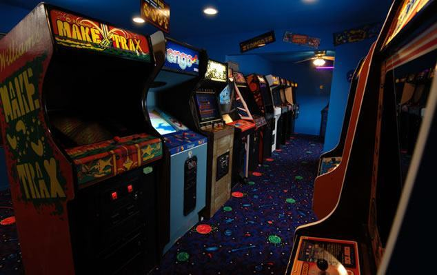
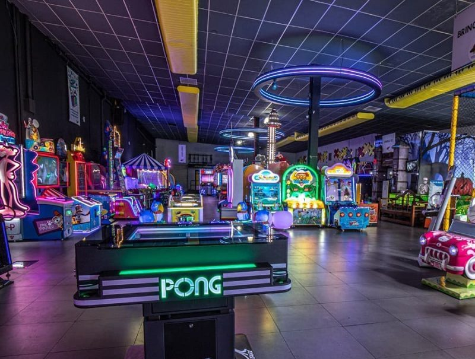
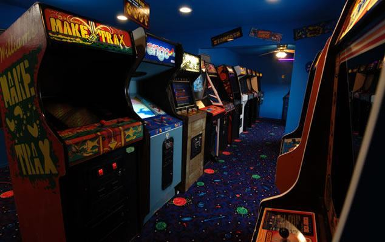
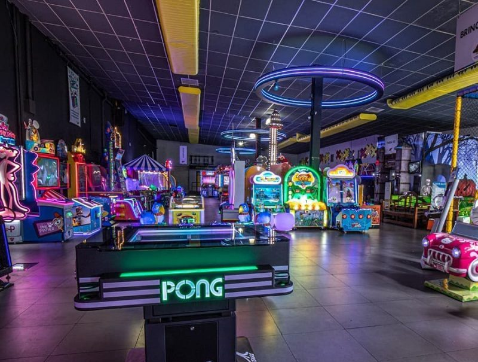

Bem-vindo ao Mundo dos Fliperamas!
Reviva os clássicos dos fliperamas dos anos 80 e mergulhe na nostalgia dos jogos que marcaram uma geração.
.png)
Reviva os clássicos dos fliperamas dos anos 80 e mergulhe na nostalgia dos jogos que marcaram uma geração.
Os fliperamas tiveram um papel crucial na revolução dos anos 80, transformando a indústria de jogos e a cultura pop de uma forma que perdura até hoje. Nos primeiros anos dessa década, os arcades se tornaram o centro do entretenimento jovem, criando um novo espaço social onde as pessoas se reuniam para competir e se divertir. Jogos como Pac-man, Space Invaders, e Donkey Kong, não só introduziram novas mecânicas de jogo, mas também criaram uma linguagem única para os gamers, com suas pontuações mais altas e batalhas épicas por recordes. Os fliperamas não eram apenas locais de diversão, mas verdadeiros centros culturais, onde o jogo se tornou uma forma de expressão, um meio de socialização e até uma competição saudável. Essa explosão de popularidade ajudou a definir os videogames como uma parte essencial do entretenimento moderno, estabelecendo a indústria como uma das maiores do mundo. Ao longo da década de 80, os fliperamas tornaram-se um ícone da juventude, refletindo o espírito de uma geração que vivia a revolução tecnológica e digital.
.jpg)
Lançado: 1972
Pong foi o primeiro jogo de fliperama comercialmente bem-sucedido e ajudou a popularizar os videogames. O jogo simula uma partida de tênis de mesa, onde dois jogadores controlam paletas que se movem verticalmente para rebater uma bola de um lado para o outro.
Impacto: Foi o marco inicial para a indústria de jogos eletrônicos, dando origem à empresa Atari e influenciando muitos outros jogos de esporte virtual.
.png)
Lançado: 1978
Space Invaders é um dos jogos mais emblemáticos de todos os tempos, onde o jogador controla uma nave espacial que deve destruir ondas de invasores alienígenas. A cada nível, os inimigos se movem mais rápido, criando uma sensação de urgência.
Impacto: Space Invaders foi um dos primeiros jogos de tiro e ajudou a definir o gênero de "shooter" (tiro). Seu sucesso foi tão grande que até gerou uma escassez de moedas nos EUA.
.jpg)
Lançado: 1980
Pac-Man é um dos jogos mais icônicos da história. O jogador controla Pac-Man, uma figura amarela que deve comer todas as bolinhas de um labirinto enquanto evita os fantasmas. Quando Pac-Man come uma "super bolinha", ele pode comer os fantasmas por um tempo limitado.
Impacto: O sucesso de Pac-Man foi gigantesco, tornando-se um ícone cultural. Foi o primeiro jogo a apresentar um protagonista que não era uma nave espacial ou um personagem de luta, marcando a era dos "personagens" em videogames.
.jpg)
Lançado: 1981
Donkey Kong foi o primeiro grande sucesso para a Nintendo e deu origem a um dos personagens mais amados dos videogames: Mario (originalmente chamado Jumpman). No jogo, o jogador deve escalar plataformas e evitar obstáculos para salvar a princesa de um gorila gigante.
Impacto: Além de popularizar Mario, o jogo ajudou a estabelecer a Nintendo como uma potência na indústria de jogos, o que mais tarde levaria à criação do NES e a dominação do mercado de consoles.
 


